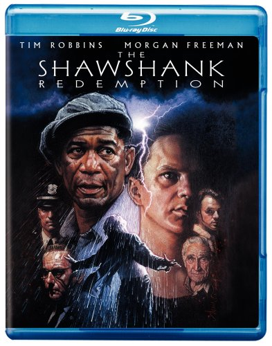
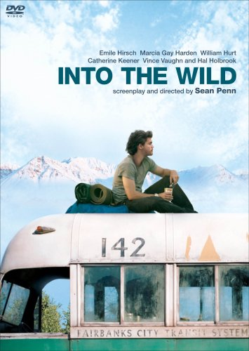
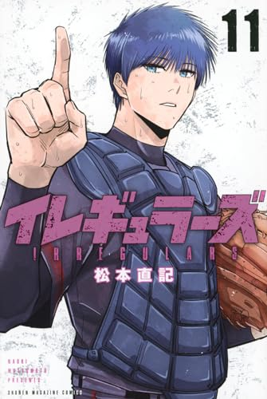

Film
映画

ショーシャンクの空に
冤罪によってショーシャンク刑務所に投獄された銀行員アンディ。腐敗した刑務所の中でも希望を捨てず、静かに、しかし確実に自由への道を歩み続ける。希望とは何か、自由とは何かを問いかけるヒューマンドラマの傑作。
Amazon で見る

INTO THE WILD
裕福な家庭に育った青年クリストファーが、すべてを捨ててアラスカの荒野を目指す。2年間の放浪の果てに彼が見つけたものとは。実話に基づく、自由と孤独、そして人間のつながりを問い直すロードムービー。
Amazon で見る

PERFECT DAYS
東京・渋谷の公共トイレを清掃する平山の日常。毎朝同じ時間に起き、木漏れ日を見上げ、カセットテープで音楽を聴く。判で押したような日々の中に宿る、静かで豊かな美しさ。繰り返しの中にこそある完璧な日々。
公式サイト